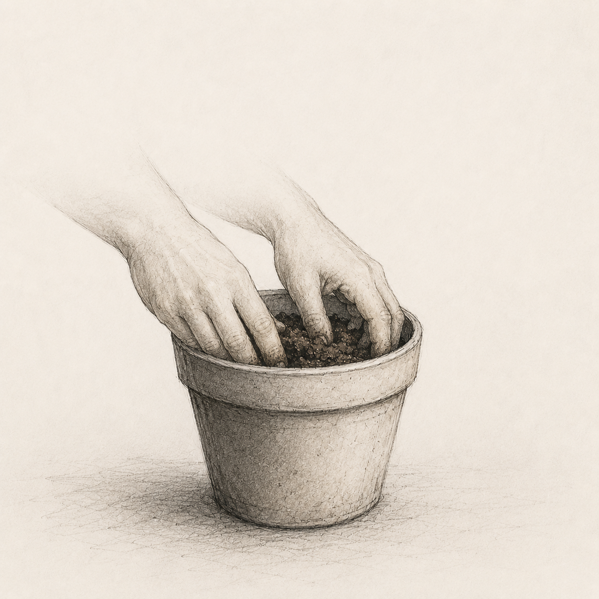

STEP 1 OF 3

1.1 Clear the area where they used to sit. You will know which area.
1.2 Remove anything that still smells like them. This will take longer than you expect.
1.3 Turn the soil. Do this slowly. Do not rush this part.
1.4 If you cry into it, that is okay. Water is water.
1.5 Leave it for a while. The soil needs time to breathe. So do you.